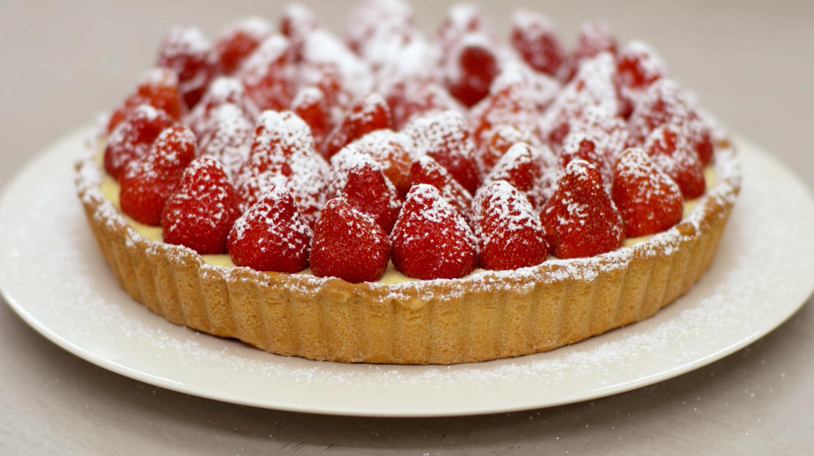

recepten
Ingredienten

-
boter (op kamertemperatuur) 125 g
-
bloemsuiker 90g
-
5 eieren
-
amandelpoeder 30g
-
patisseriebloem 250g
een snuifje zout
-
boter
-
bloem
-
kruimeldeeg
-
melk 5dl
-
1 vanillestokje
-
100g suiker
-
50g puddingpoeder
-
1 blaadje gelatine
-
2.5dl room
-
400g aardbeien
-
bloemsuiker
Bereiding
-
125 g boter (op kamertemperatuur)
Zelf kruimeldeeg bereiden is een koud kunstje, maar voor wie tijd wil besparen, zijn vellen kant-en-klaar deeg een makkelijke oplossing. Wie zelf deeg maakt laat best vooraf de boter op kamertemperatuur komen.
-
Weeg de ingrediënten zorgvuldig. Doe de malse boter in de mengschaal van de machine. Gebruik het ‘K-hulpstuk’ voor deeg en beslag, en laat het toestel rustig draaien.
-
90 g bloemsuiker1 ei
Voeg kort nadien de bloemsuiker toe en zodra de beide ingrediënten goed gemengd zijn gaat ook het ei erbij.
-
30 g amandelpoeder
Volgende in de rij is het amandelpoeder. Giet de fijngemalen noten bij het mengsel terwijl de machine blijft draaien.
250 g patisseriebloem
Voeg na een minuut de bloem toe. Let wel: schep ze beetje bij beetje in de mengpot en laat de machine draaien tot je een homogeen deeg krijgt.
-
een snuifje zout
Voeg tenslotte een snuifje zout toe, laat de machine nog kort draaien.
-
Schep het deeg uit de pot, kneed even, rol het tot een bol en verpak het deeg in een vel vershoudfolie. Leg de bal minstens een half uur in de koelkast.
-
Verwarm de oven voor tot 180°C.
-
Smelt een klontje boter op en zacht vuur, neem een borsteltje en strijk er de taartvorm mee in. Bepoeder de vorm nadien met een laagje bloem. Zo zal je de taart na het bakken gemakkelijk kunt losmaken.
-
kruimeldeeg
Strooi ook wat bloem op het werkvlak en rol de gekoelde bal deeg uit tot een grote lap van ongeveer 5 millimeter dik.
-
Bekleed de taartvorm met het vel kruimeldeeg. Druk het stevig aan in de randjes en snij of druk de overtollige stukjes deeg weg.
-
Bedek de bodem en de randen van de taartvorm met een (rond) vel bakpapier. Giet baklinzen of bakgewichtjes op de bodem
-
Bak de taartbodem blind in de voorverwarmde oven van 180°C, gedurende 20 tot 25 minuten, tot de bodem goudbruin krokant is.
-
Verwijder de baklinzen en hef de taartbodem voorzichtig uit de vorm en laat het gebak afkoelen.
-
5 dl melk
Meet de juiste hoeveelheid melk en verwarm ze in een kleine pan op een zacht vuur.
-
1 vanillestokje
Snijd intussen de vanillestok overlangs in twee en schraap er zoveel mogelijk zaadjes uit. Doe de piepkleine zaadjes en de peul in de melk. Terwijl de melk opwarmt tot tegen het kookpunt geeft de vanille al z'n smaak af.
-
4 eieren100 g suiker
Scheid de eieren en verzamel enkel de dooiers in de mengkom van de keukenmachine. Weeg de suiker en doe deze bij het eigeel.
-
Laat de klopper van de machine alles mengen tot een bleke egale 'ruban', waarin alle suikerkorrels zijn opgelost. Dit duurt enkele minuten
-
50 g puddingpoeder
Voeg nadien het zakje met puddingpoeder toe. Dat zorgt in de eerste plaats voor de binding. Laat de machine alles grondig mengen.
-
Verwijder de vanillepeul uit de hete melk en schenk een klein deel ervan bij het eiermengsel. Roer meteen met de garde
-
Giet nu de hele inhoud van de mengpot in de pan met de rest van de warme melk. Gebruik een matig tot zacht vuur en blijf continu roeren met de garde, tot je een gebonden pudding overhoudt. Kijk uit dat de pudding niet aanbrandt.
-
Bedek de banketbakkersroom met een vel vershoudfolie. Leg de folie bovenop de pudding, zodat er geen velletje op komt. Laat de pudding afkoelen.
-
1 blaadje gelatine2.5 dl room
Week de gelatine in een beker met koud water. Klop de volle room half op tot een luchtig mengsel dat de dikte heeft van yoghurt.
-
Knijp het geweekte gelatineblad uit. Verwarm een bescheiden scheutje room in een pan en los het blaadje daarin op.
-
Schenk de room met gelatine bij de half opgeklopte room en roer met de garde.
-
Schep de lauwe (of afgekoelde) banketbakkersroom in delen bij de opgeklopte room. Blijf aan de slag met de garde tot er een gladde, luchtige vanillecrème overblijft.
-
Giet deze 'crème Suisse' in de taartvorm en laat de vulling opstijven. Reken hiervoor zo'n 2 uur.
-
400 g aardbeien
Spoel de aardbeien en laat de vruchten nadien uitlekken. Snijd van elke aardbei het 'kontje' weg. Daarmee is het groene kroontje verdwenen en heeft elke aardbei ook een vlakke bodem.
-
bloemsuiker
Bedek de gevulde taartbodem met hele aardbeien en serveer ze zo vers mogelijk.